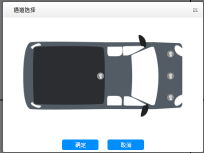
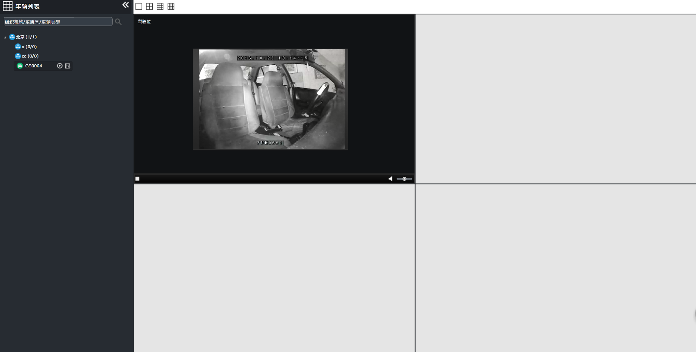

实时视频
以视频墙的方式播放选择的车辆实时视频，可同时播放不同车辆的实时视频。
| 1. | 逐级展开左侧的车辆列表导航，查找到要查看视频的车辆，单击右侧〖〗，弹出实时视频选择窗口，窗口内显示所选车辆视频摄像头分布情况，如下图所示。

Fig 79 实时视频选择窗口 |
| 2. | 单击需要查看的一路或几路摄像头，单击〖确定〗，则视频墙依次自动播放实时视频。

Fig 80 播放实时视频
|
| 3. | （可选）如果当前的视频窗口都正在播放视频，再点播新的视频时，将打开“选择窗口”，用户可以在视频窗口中选择一个替换为新的点播视频。
用户可以不选择替代的视频窗口，而是显示更多数量的视频窗口来播放视频。
|
| 4. | 双击某个视频窗口，将放大至全屏；再次双击将恢复到原来的窗口模式。 |
| 5. | 在实时视频播放窗口中的单个视频窗口，单击〖〗按钮，暂停播放实时视频，再次单击，继续播放实时视频；单击〖 |